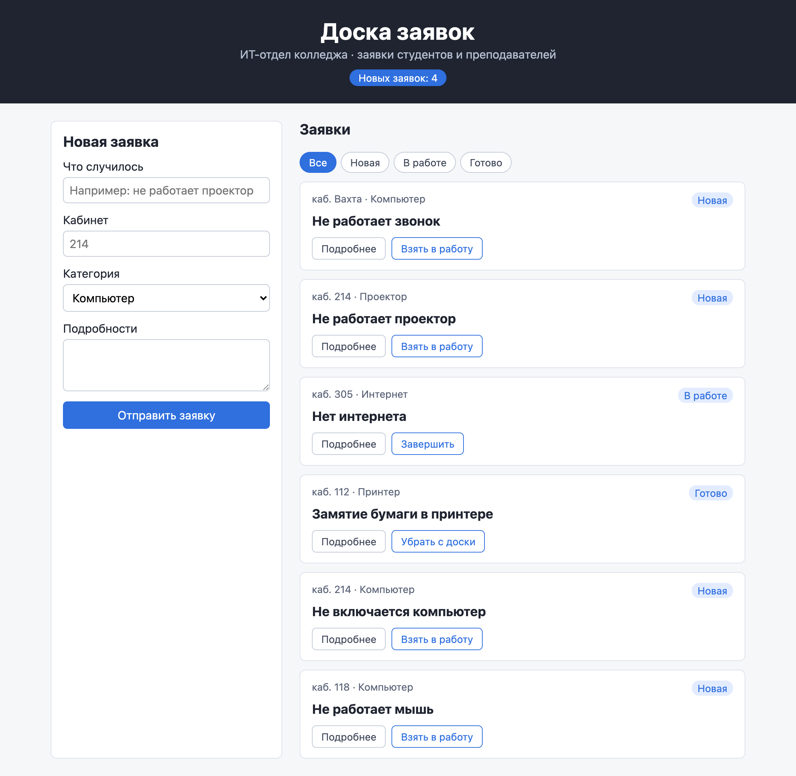
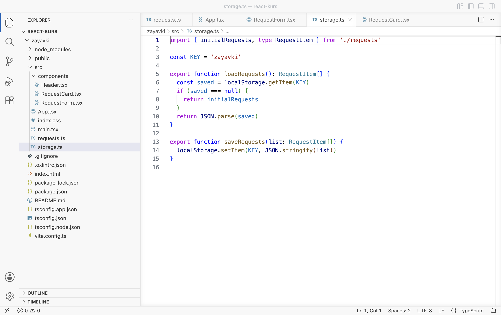
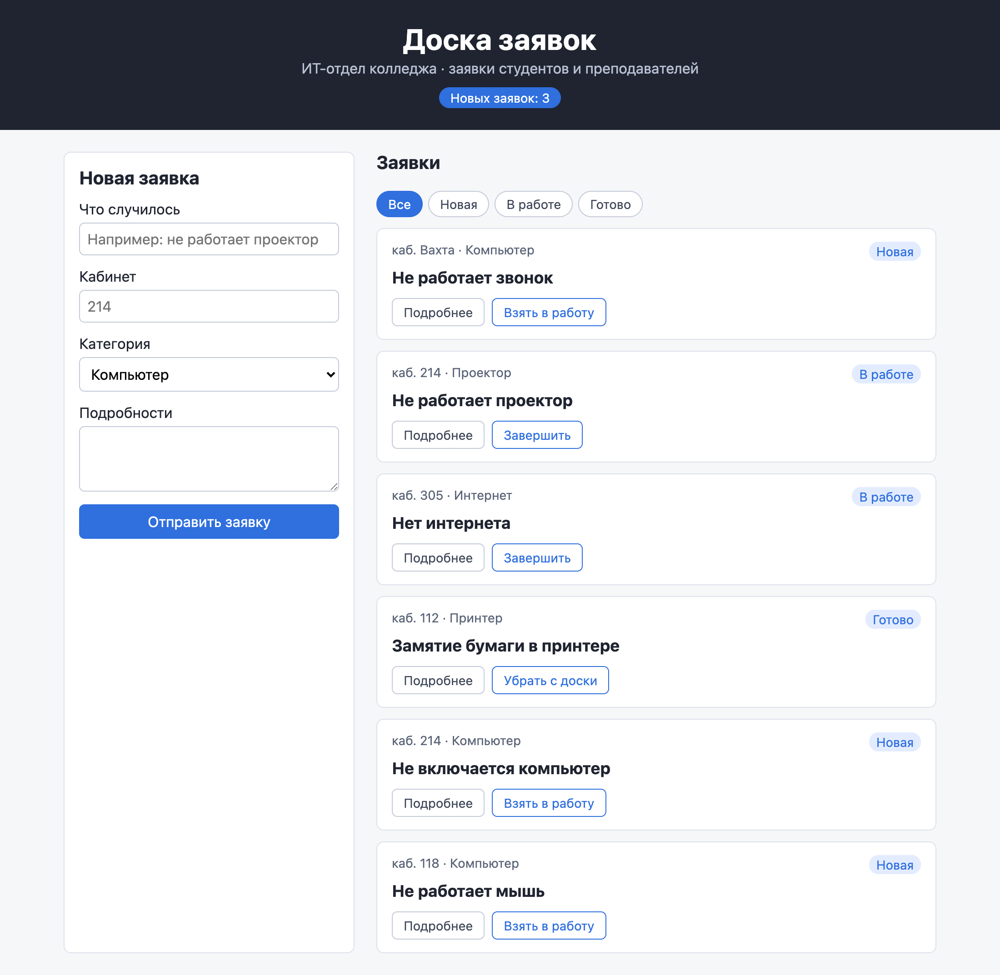
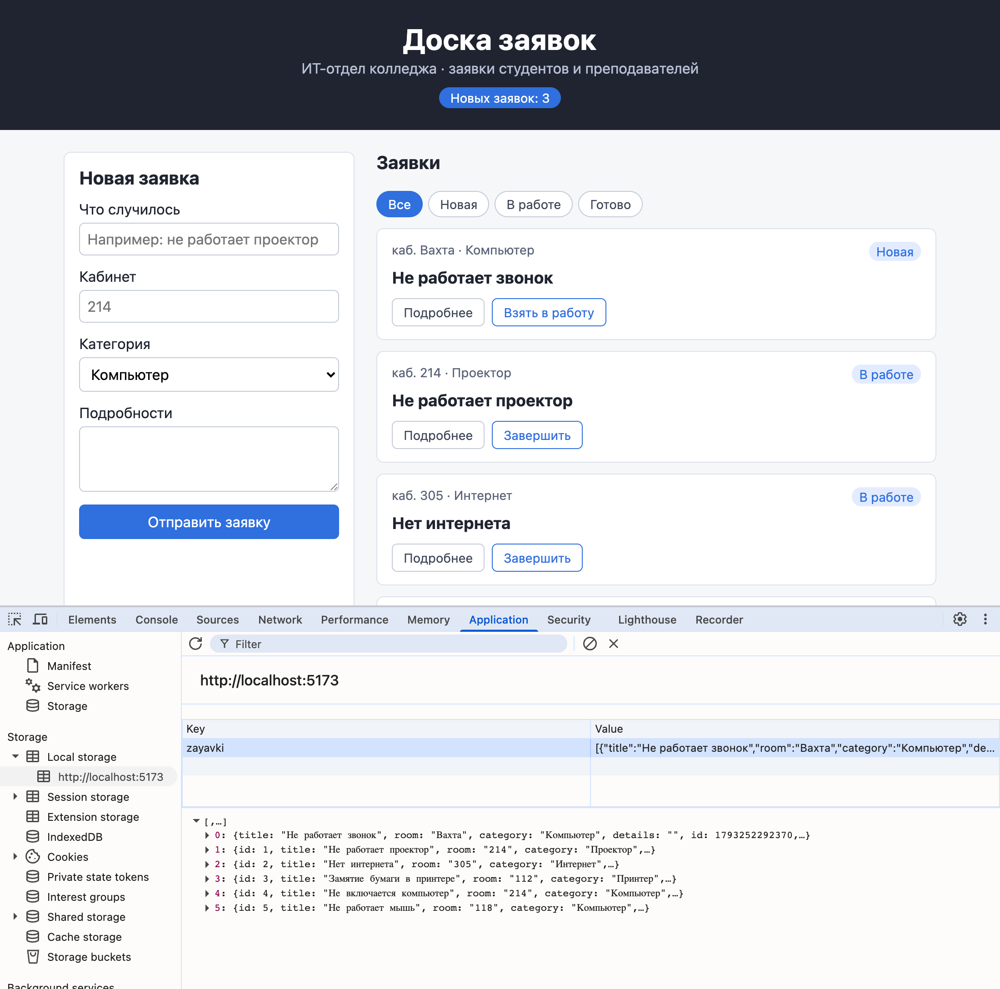
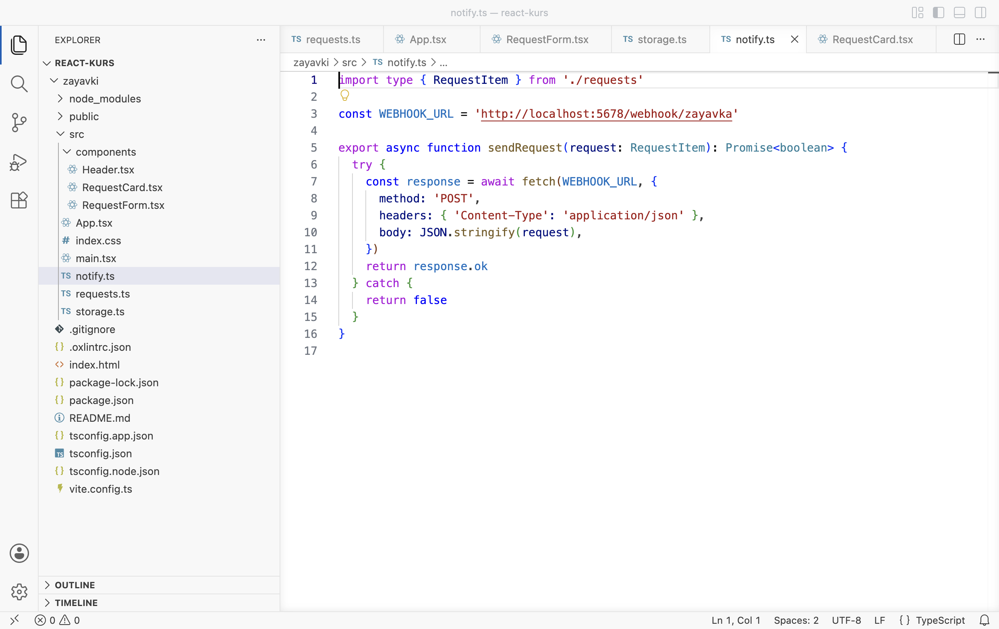
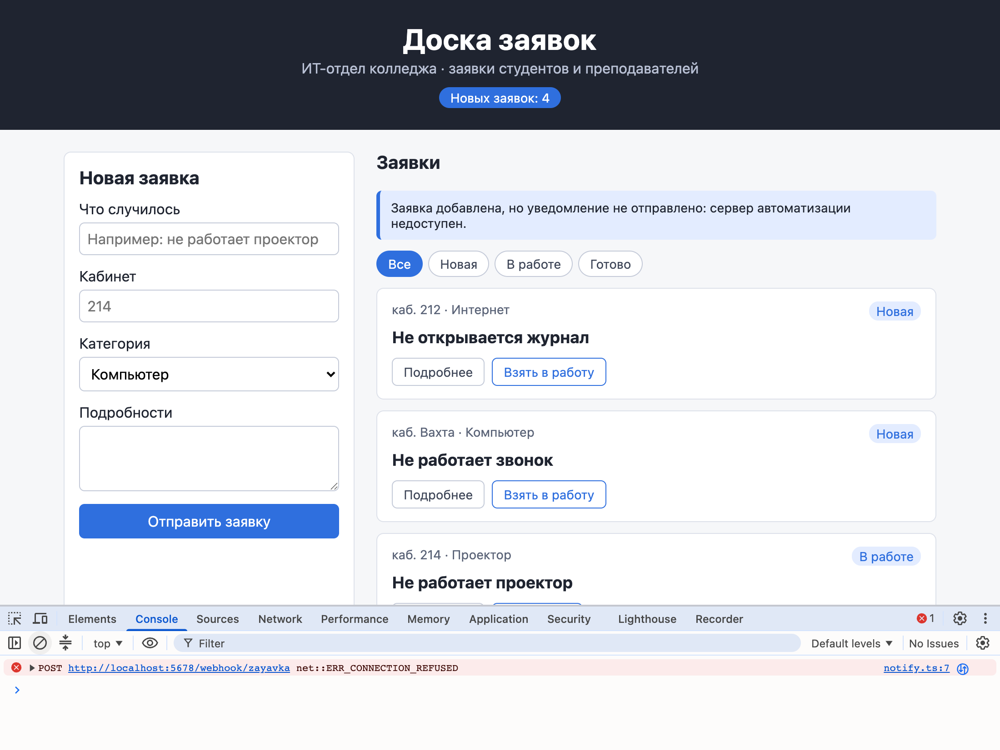

Справочник по Angular и React · модуль 1 · первый проект и первый бот
1.7
Сохранение
и отправка данных
В этой главе доска заявок перестаёт забывать данные и учится сообщать о новой заявке наружу. Сначала опыт показывает, что после перезагрузки страницы новые заявки пропадают. Затем заявки сохраняются в хранилище браузера localStorage и переживают перезагрузку. Во второй половине главы форма отправляет новую заявку запросом fetch на адрес сервера автоматизации n8n. Сервер в этой главе ещё не запущен, поэтому опыт показывает, как доска ведёт себя, когда запрос не проходит.
- Категория
- React, браузер
- Уровень
- Начальный
- Что понадобится
- Проект
zayavkiпосле главы 1.6 (или архив ниже), запущенныйnpm run dev, браузер Chrome, Edge или Яндекс Браузер - Результат
- Заявки сохраняются после перезагрузки; новая заявка отправляется запросом на адрес n8n, и доска сообщает, удалось ли это
Если проекта нет или он в другом состоянии
Архив содержит проект zayavki в том состоянии, с которого начинается глава, — после главы 1.6. Папки node_modules в архиве нет: её создаёт команда npm install по списку пакетов из package.json.
- Распакуйте архив в папку с проектами курса, например
react-kurs. Появится папкаzayavki. Если папка с таким именем там уже есть, сначала переименуйте старую, например вzayavki-staraya. - Откройте папку курса в VS Code: File → Open Folder.
- Откройте терминал (Terminal → New Terminal) и выполните три команды по очереди. Последняя запускает сервер разработки; страница открывается по адресу
http://localhost:5173/.
cd zayavki npm install npm run dev
§1Опыт: заявка пропадает
Доска из главы 1.6 принимает заявки из формы. Опыт проверяет, что с ними происходит после перезагрузки страницы.
ДелаемДобавляем заявку и перезагружаем страницу
- Добавьте заявку
Заполните форму: «Не работает звонок», кабинет «Вахта», категория «Компьютер». Нажмите «Отправить заявку». Заявка первая в списке, в шапке «Новых заявок: 4».

До перезагрузки: новая заявка первая, в шапке 4 - Перезагрузите страницу
Нажмите F5. Заявки про звонок больше нет, в шапке снова 3.

После перезагрузки: новой заявки нет, на доске снова пять заявок из requests.ts
РазбираемсяПочему заявка пропала
Состояние React хранится в памяти открытой вкладки. Пока вкладка открыта, useState помнит массив заявок между отрисовками. Перезагрузка страницы стирает эту память: браузер заново загружает файлы проекта, React заново вызывает App, и useState(initialRequests) получает начальный массив из requests.ts. Так же пропадают изменённые статусы и убранные с доски заявки.
Чтобы данные пережили перезагрузку, их нужно положить туда, где они хранятся дольше вкладки, и при открытии страницы брать оттуда.
У браузера для этого есть встроенное хранилище. Следующий раздел подключает его к доске.
§2Хранилище браузера localStorage
РазбираемсяЧто такое localStorage
Дежурный в ИТ-отделе держит заявки в голове, пока он на смене. Вечером смена заканчивается, и всё, что он помнил, уходит вместе с ним. Если дежурный записывает каждую заявку в журнал на столе, то утром следующий дежурный открывает журнал и продолжает с того же места. Память дежурного — состояние React, журнал на столе — localStorage.
Журнал на столе видят все сотрудники. localStorage виден только этому браузеру на этом компьютере: в другом браузере доска откроется с начальными заявками.
localStorage («локальное хранилище») — хранилище браузера, в которое страница записывает данные парами «ключ — значение». Данные сохраняются после перезагрузки страницы, закрытия вкладки и перезапуска браузера. У каждого сайта своё хранилище: страница localhost:5173 видит только свои записи. Работают с ним две команды:
localStorage.setItem('zayavki', текст)— записать текст под ключомzayavki;localStorage.getItem('zayavki')— прочитать текст по ключу. Если записи нет, вернётсяnull— «ничего».
Хранилище принимает только текст, а заявки — массив объектов. Поэтому массив перед записью превращают в текст, а после чтения — обратно в массив. Для этого есть формат JSON — запись данных текстом, похожая на запись объектов в коде:
JSON.stringify(массив)— массив превращается в текст[{"id":1,"title":"Не работает проектор",…},…];JSON.parse(текст)— из текста снова получается массив объектов.
На схеме — путь заявок между состоянием и хранилищем.
Заявки в состоянии и в localStorage
Каждое изменение доски записывается в два места: в состояние, чтобы обновилась страница, и в localStorage, чтобы пережить перезагрузку. Читается localStorage один раз — при открытии страницы.
ДелаемПодключаем хранилище
- Создайте файл storage.ts
В проводнике щёлкните правой кнопкой по папке
src, выберите New File, введитеstorage.tsи нажмите Enter. Вставьте код и сохраните.zayavki/src/storage.ts import { initialRequests, type RequestItem } from './requests' const KEY = 'zayavki' export function loadRequests(): RequestItem[] { const saved = localStorage.getItem(KEY) if (saved === null) { return initialRequests } return JSON.parse(saved) } export function saveRequests(list: RequestItem[]) { localStorage.setItem(KEY, JSON.stringify(list)) }

Так должен выглядеть проект: storage.ts лежит в src рядом с requests.ts - Замените содержимое App.tsx
Изменённые строки подсвечены: состояние берёт заявки из хранилища, а все изменения проходят через новую функцию
update.zayavki/src/App.tsx import { useState } from 'react' import Header from './components/Header' import RequestForm from './components/RequestForm' import RequestCard from './components/RequestCard' import { nextStatus, type NewRequest, type RequestItem, type Status } from './requests' import { loadRequests, saveRequests } from './storage' type Filter = 'Все' | Status const FILTERS: Filter[] = ['Все', 'Новая', 'В работе', 'Готово'] function App() { const [requests, setRequests] = useState(loadRequests) const [filter, setFilter] = useState<Filter>('Все') const newCount = requests.filter((r) => r.status === 'Новая').length const visible = filter === 'Все' ? requests : requests.filter((r) => r.status === filter) function update(list: RequestItem[]) { setRequests(list) saveRequests(list) } function handleNext(id: number) { const updated = requests.map((r) => { if (r.id === id) { return { ...r, status: nextStatus(r.status) } } return r }) update(updated) } function handleAdd(data: NewRequest) { const created: RequestItem = { ...data, id: Date.now(), status: 'Новая' } update([created, ...requests]) } function handleRemove(id: number) { update(requests.filter((r) => r.id !== id)) } return ( <> <Header newCount={newCount} /> <main className="board"> <RequestForm onAdd={handleAdd} /> <section className="list"> <h2>Заявки</h2> <div className="filters"> {FILTERS.map((f) => ( <button key={f} className={f === filter ? 'active' : ''} onClick={() => setFilter(f)}> {f} </button> ))} </div> {visible.length === 0 && <p className="empty">Заявок с таким статусом нет</p>} {visible.map((r) => ( <RequestCard key={r.id} title={r.title} room={r.room} category={r.category} details={r.details} status={r.status} onNext={() => handleNext(r.id)} onRemove={() => handleRemove(r.id)} /> ))} </section> </main> </> ) } export default App
- Проверьте сохранение
Обновите страницу (F5). Добавьте заявку «Не работает звонок», кабинет «Вахта». Во второй карточке, «Не работает проектор», нажмите «Взять в работу». Снова нажмите F5: новая заявка и статус «В работе» остались на месте.

После перезагрузки: новая заявка и новый статус сохранились - Посмотрите на хранилище
Откройте DevTools (F12), вкладку Application. Слева в разделе Storage раскройте Local storage и выберите
http://localhost:5173. Щёлкните по строкеzayavki: внизу появится массив заявок.
В localStorage под ключом zayavki — массив из шести заявок, первая — про звонок
РазбираемсяЧто написано в storage.ts
import { initialRequests, type RequestItem } from './requests' const KEY = 'zayavki' 1 export function loadRequests(): RequestItem[] { 2 const saved = localStorage.getItem(KEY) 3 if (saved === null) { 4 return initialRequests } return JSON.parse(saved) 5 } export function saveRequests(list: RequestItem[]) { 6 localStorage.setItem(KEY, JSON.stringify(list)) 7 }
- 1
Имя записи в хранилище. Оно вынесено в константу, чтобы чтение и запись точно использовали одно и то же имя: опечатка в одном месте — и доска читала бы пустую запись.
- 2
«Достань заявки». Функция возвращает массив заявок:
: RequestItem[]после скобок — тип ответа. - 3
Прочитать текст из хранилища. В
savedокажется либо текст, либоnull, если доску в этом браузере ещё ни разу не меняли. - 4
«Если записи нет — вернуть начальные пять заявок из
requests.ts». Так доска выглядит при самом первом открытии. - 5
Запись есть — превратить текст обратно в массив и вернуть его.
- 6
«Сохрани заявки». Функция получает массив…
- 7
…превращает его в текст и записывает под ключом
zayavki. Прежняя запись заменяется новой.
РазбираемсяЧто изменилось в App.tsx
const [requests, setRequests] = useState(loadRequests) 1 const [filter, setFilter] = useState<Filter>('Все') const newCount = requests.filter((r) => r.status === 'Новая').length const visible = filter === 'Все' ? requests : requests.filter((r) => r.status === filter) function update(list: RequestItem[]) { 2 setRequests(list) 3 saveRequests(list) 4 }
- 1
Начальное значение состояния теперь даёт функция
loadRequests. Имя записано без скобок: React получает саму функцию и вызывает её один раз, при первой отрисовке. Со скобками,useState(loadRequests()), хранилище читалось бы при каждой отрисовке впустую. Это та же разница «передать функцию или вызвать», что с обработчиками в главе 1.4. - 2
«Обнови заявки». Одна функция для всех изменений доски.
- 3
Записать новый массив в состояние — страница обновится.
- 4
Записать тот же массив в хранилище — данные переживут перезагрузку.
В handleNext, handleAdd и handleRemove вызов setRequests(…) заменён на update(…) (строки 31, 36, 40). Если где-то остался прямой setRequests, это изменение будет видно на странице, но пропадёт после перезагрузки. Поэтому все изменения идут через одну функцию.
Пока в хранилище есть запись zayavki, массив из requests.ts не используется. Чтобы начать с пяти заявок заново, на вкладке Application щёлкните правой кнопкой по строке zayavki, выберите Delete и обновите страницу.
Заявки сохраняются в браузере. Но о новой заявке знает только этот браузер, а ответственному в ИТ-отделе нужно уведомление. Следующий раздел отправляет заявку наружу.
§3Запрос fetch
РазбираемсяЧто такое запрос
Письмо в другой отдел состоит из адреса, пометки на конверте, что внутри, и самого вложения. Почта доставляет его и приносит ответ: «получено» или «адресат не найден». Если почтовое отделение закрыто, письмо вообще не уходит, и об этом становится известно сразу.
Ответ на письмо идёт днями. Запрос в сети получает ответ за доли секунды, а если сервер не запущен — ошибку почти сразу.
HTTP-запрос — сообщение, которое браузер отправляет серверу по адресу. Из чего он состоит:
- адрес — куда отправить:
http://localhost:5678/webhook/zayavka; - метод — что нужно сделать.
GET— «дай данные», им браузер загружает страницы.POST— «прими данные», им отправляют заявки, комментарии, заказы; - заголовки — пометки на конверте.
Content-Type: application/json— «внутри текст в формате JSON»; - тело — само вложение: заявка в виде JSON.
Сервер отвечает кодом ответа: 200 — «всё в порядке», 404 — «нет такого адреса», 500 — «ошибка на сервере». Если сервер по адресу не запущен, ответа нет совсем: браузер сообщает об ошибке соединения.
В JavaScript запрос отправляет функция fetch («принести»). Запрос идёт по сети, и ответ приходит не сразу. Чтобы страница в это время не замирала, fetch сразу возвращает «обещание ответа», а сам ответ приходит позже. Слово await («дождаться») перед ней говорит: «дальше этой строки не идти, пока ответ не придёт; страница пусть работает». await можно писать только внутри функции со словом async («асинхронная») в начале.
Принимать заявки будет n8n — сервис автоматизации, который на странице «Автоматизация» запускается на компьютере по адресу localhost:5678 и пересылает заявку в Telegram. Сейчас n8n не запущен. Код отправки пишется уже сейчас, чтобы проверить: доска должна работать и тогда, когда сервер автоматизации недоступен.
ДелаемОтправляем заявку на адрес n8n
- Создайте файл notify.ts
В папке
srcсоздайте файлnotify.ts, вставьте код и сохраните.zayavki/src/notify.ts import type { RequestItem } from './requests' const WEBHOOK_URL = 'http://localhost:5678/webhook/zayavka' export async function sendRequest(request: RequestItem): Promise<boolean> { try { const response = await fetch(WEBHOOK_URL, { method: 'POST', headers: { 'Content-Type': 'application/json' }, body: JSON.stringify(request), }) return response.ok } catch { return false } }

Так должен выглядеть notify.ts: адрес в строке 3, fetch в строках 7–11 - Добавьте стиль сообщения
В самый конец
src/index.cssдобавьте правило и сохраните.zayavki/src/index.css · в конец файла .notice { margin: 0; padding: 10px 12px; border-left: 4px solid #2f6fde; border-radius: 6px; background: #e3ecff; color: #1f2430; font-size: 14px; } - Замените содержимое App.tsx
Изменённые строки подсвечены: импорт
sendRequest, состояние сообщенияnotice, новая версияhandleAddи вывод сообщения над списком.zayavki/src/App.tsx import { useState } from 'react' import Header from './components/Header' import RequestForm from './components/RequestForm' import RequestCard from './components/RequestCard' import { nextStatus, type NewRequest, type RequestItem, type Status } from './requests' import { loadRequests, saveRequests } from './storage' import { sendRequest } from './notify' type Filter = 'Все' | Status const FILTERS: Filter[] = ['Все', 'Новая', 'В работе', 'Готово'] function App() { const [requests, setRequests] = useState(loadRequests) const [filter, setFilter] = useState<Filter>('Все') const [notice, setNotice] = useState('') const newCount = requests.filter((r) => r.status === 'Новая').length const visible = filter === 'Все' ? requests : requests.filter((r) => r.status === filter) function update(list: RequestItem[]) { setRequests(list) saveRequests(list) } function handleNext(id: number) { const updated = requests.map((r) => { if (r.id === id) { return { ...r, status: nextStatus(r.status) } } return r }) update(updated) } async function handleAdd(data: NewRequest) { const created: RequestItem = { ...data, id: Date.now(), status: 'Новая' } update([created, ...requests]) setNotice('Заявка добавлена. Отправляем уведомление…') const sent = await sendRequest(created) if (sent) { setNotice('Заявка добавлена, уведомление отправлено.') } else { setNotice('Заявка добавлена, но уведомление не отправлено: сервер автоматизации недоступен.') } } function handleRemove(id: number) { update(requests.filter((r) => r.id !== id)) } return ( <> <Header newCount={newCount} /> <main className="board"> <RequestForm onAdd={handleAdd} /> <section className="list"> <h2>Заявки</h2> {notice !== '' && <p className="notice">{notice}</p>} <div className="filters"> {FILTERS.map((f) => ( <button key={f} className={f === filter ? 'active' : ''} onClick={() => setFilter(f)}> {f} </button> ))} </div> {visible.length === 0 && <p className="empty">Заявок с таким статусом нет</p>} {visible.map((r) => ( <RequestCard key={r.id} title={r.title} room={r.room} category={r.category} details={r.details} status={r.status} onNext={() => handleNext(r.id)} onRemove={() => handleRemove(r.id)} /> ))} </section> </main> </> ) } export default App
- Отправьте заявку
Откройте консоль браузера (F12, вкладка Console). Добавьте заявку «Не открывается журнал», кабинет 212, категория «Интернет». Заявка появилась в списке, над списком сообщение, что уведомление не отправлено, в консоли — ошибка запроса.

Заявка добавлена, уведомление не отправлено; в консоли net::ERR_CONNECTION_REFUSED
РазбираемсяЧто написано в notify.ts
import type { RequestItem } from './requests' const WEBHOOK_URL = 'http://localhost:5678/webhook/zayavka' 1 export async function sendRequest(request: RequestItem): Promise<boolean> { 2 try { 3 const response = await fetch(WEBHOOK_URL, { 4 method: 'POST', 5 headers: { 'Content-Type': 'application/json' }, 6 body: JSON.stringify(request), 7 }) return response.ok 8 } catch { 9 return false } }
- 1
Адрес, куда отправлять заявки.
localhost:5678— n8n на этом же компьютере,/webhook/zayavka— «приёмное окно» для заявок, которое будет создано в n8n. - 2
«Отправь заявку и скажи, получилось ли».
async— функция ждёт ответа сети.Promise<boolean>— тип ответа: «когда-нибудь будет да или нет». - 3
try— «попробуй». Если внутри что-то сломается, выполнение перейдёт в блокcatch(строка 13), и страница продолжит работать. - 4
«Отправь запрос и дождись ответа». В скобках — адрес и настройки запроса.
- 5
Метод
POST— «прими данные». - 6
Заголовок: внутри текст JSON.
- 7
Тело запроса — заявка, превращённая в текст, как при записи в хранилище.
- 8
Ответ пришёл.
response.ok— «да», если код ответа от 200 до 299, иначе «нет». - 9
Сервер не ответил совсем: не запущен или нет сети. Ответа в этом случае нет:
fetchвыдаёт ошибку, и выполнение попадает сюда. Функция возвращает «нет».
Пошаговый разбор ниже проходит по handleAdd в App.tsx в том опыте, который вы только что провели.
async function handleAdd(data: NewRequest) { const created: RequestItem = { ...data, id: Date.now(), status: 'Новая' } update([created, ...requests]) setNotice('Заявка добавлена. Отправляем уведомление…') const sent = await sendRequest(created) if (sent) { setNotice('Заявка добавлена, уведомление отправлено.') } else { setNotice('Заявка добавлена, но уведомление не отправлено: сервер автоматизации недоступен.') } }
- Заявка сразу в списке
Новая заявка собирается и через
updateпопадает в состояние и в localStorage. Карточка появляется на странице, не дожидаясь сети.каб. 212 · ИнтернетНе открывается журналНовая - Сообщение «отправляем»
Над списком появляется «Заявка добавлена. Отправляем уведомление…».
notice'…Отправляем уведомление…' - Запрос ушёл, функция ждёт
await sendRequest(created):handleAddостанавливается на этой строке до ответа. Страница при этом работает: можно нажимать кнопки и фильтры. - Сервер не отвечает
По адресу
localhost:5678никто не слушает.fetchвыдаёт ошибку,catchвnotify.tsвозвращает «нет». В консоли браузер пишетnet::ERR_CONNECTION_REFUSED— «в соединении отказано».sentfalse - Честное сообщение
sent— «нет», выполняется веткаelse. Сообщение меняется: заявка добавлена, уведомление не отправлено. Заявка остаётся на доске и в хранилище.notice'…уведомление не отправлено…'
Заявка добавляется на доску до отправки запроса. Допустим, порядок обратный: сначала дождаться ответа, потом добавить. Тогда при выключенном n8n заявка не попала бы на доску совсем, и сотрудник решил бы, что форма сломана. Доска работает сама по себе, уведомление — дополнительная услуга.
Код отправки готов. Когда на странице «Автоматизация» по адресу localhost:5678 заработает n8n, тот же код получит ответ 200, и над списком появится «Заявка добавлена, уведомление отправлено».
Проект после главы
Архив содержит проект zayavki в состоянии конца главы: хранение заявок в localStorage (storage.ts), отправка новой заявки запросом fetch (notify.ts) и сообщение о результате. Распаковка и запуск — как у архива в начале главы.
§4Частые ошибки
| Что видно | Почему | Что сделать |
|---|---|---|
| После перезагрузки пропадает смена статуса или удаление, а новые заявки остаются | В одном из обработчиков остался прямой вызов setRequests(…) | Заменить его на update(…) |
Изменения в requests.ts не видны на доске | В localStorage уже есть запись zayavki, и начальный массив не используется | Удалить запись на вкладке Application и обновить страницу |
| На доске заявки другие, чем у соседа | localStorage свой у каждого браузера и компьютера | Так и должно быть до модуля 2: общая база появится там |
Консоль: POST http://localhost:5678/webhook/zayavka net::ERR_CONNECTION_REFUSED | n8n не запущен | Запустить n8n (страница «Автоматизация»). Доска при этом продолжает работать |
'await' expressions are only allowed within async functions and at the top levels of modules. | Внутри функции есть await, а слова async перед ней нет | Записать async function handleAdd(…) |
| Сообщение всегда «не отправлено», хотя n8n работает | Опечатка в адресе WEBHOOK_URL или процесс в n8n не включён — сервер отвечает 404 | Сверить адрес с адресом вебхука в n8n |
Консоль: Unexpected token … is not valid JSON при открытии страницы | В записи zayavki испорчен текст, например после правки вручную | Удалить запись на вкладке Application |
§5Проверьте себя
Почему без localStorage новые заявки пропадают после перезагрузки?
Состояние React живёт в памяти открытой вкладки. При перезагрузке страница загружается заново, и useState получает начальное значение из requests.ts.
Зачем перед записью в localStorage нужен JSON.stringify?
localStorage хранит только текст. JSON.stringify превращает массив заявок в текст, а JSON.parse при чтении — обратно в массив.
Чем useState(loadRequests) отличается от useState(loadRequests())?
В первом случае React получает функцию и вызывает её один раз, при первой отрисовке. Во втором функция вызывается при каждой отрисовке, хотя её результат нужен только в первый раз.
Из каких частей состоит запрос, который отправляет sendRequest?
Адрес http://localhost:5678/webhook/zayavka, метод POST, заголовок Content-Type: application/json и тело — заявка в формате JSON.
Что делают async и await?
await останавливает функцию на строке, пока не придёт ответ, а страница в это время продолжает работать. Писать await можно только в функции, помеченной async.
Почему в handleAdd заявка добавляется на доску до отправки запроса?
Чтобы доска работала и при выключенном сервере автоматизации. Если сначала ждать ответа, при ошибке сети заявка не попала бы на доску.
Сделайте так, чтобы сообщение над списком исчезало при выборе фильтра. Что изменить?
В обработчике кнопок фильтра вызывать ещё и setNotice(''): onClick={() => { setFilter(f); setNotice('') }}. Фигурные скобки после стрелки нужны, потому что команд две.
Шпаргалка
localStorage.setItem('zayavki', JSON.stringify(list))JSON.parse(localStorage.getItem('zayavki'))useState(loadRequests)await fetch(url, { method: 'POST', headers, body })body: JSON.stringify(request)response.oktry { … } catch { return false }async function f() { await … }Итог главы
Состояние React хранится в памяти вкладки и пропадает при перезагрузке. Чтобы данные сохранялись, их записывают в localStorage — хранилище браузера с парами «ключ — значение», где значение — текст. Массив превращают в текст JSON.stringify и обратно JSON.parse. Начальное значение состояния берётся из хранилища функцией, переданной в useState без скобок, а каждое изменение записывается и в состояние, и в хранилище через одну функцию update. Наружу данные отправляют запросом: fetch с адресом, методом POST, заголовком и телом JSON. Ответ приходит не сразу, поэтому функцию помечают async и ждут ответа через await; ошибку соединения перехватывают try … catch. Доска сохраняет заявки и отправляет новую на адрес n8n, а при недоступном сервере продолжает работать и сообщает об этом.
Источники
- MDN — Window.localStorage
- MDN — JSON
- MDN — Использование Fetch
- MDN — Коды ответа HTTP
- react.dev — useState: avoiding recreating the initial state
- developer.chrome.com — View and edit local storage